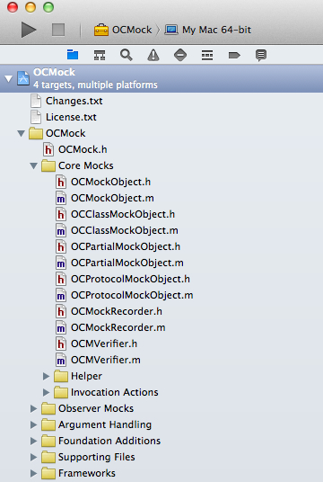
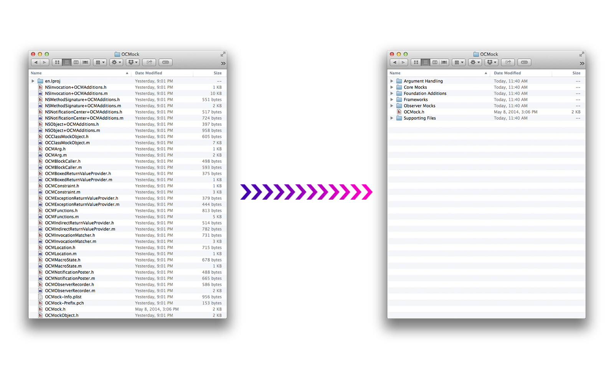
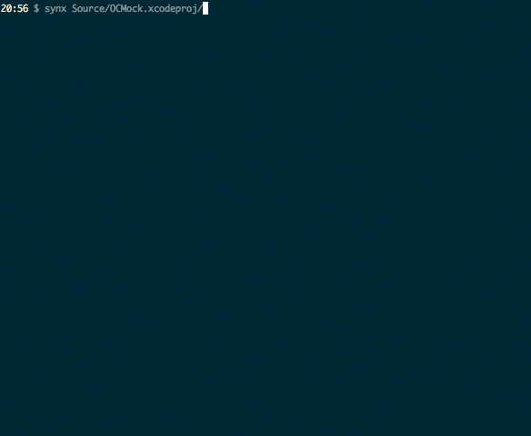

Welcome to the Synx Gui App help page. Synx A command-line tool that reorganizes your Xcode project folder to match your Xcode groups.
Synx Gui App is a wrapper around the command-line app for those who prefer working outside of the Terminal.
There are a few options that you can use. But generally it works without the options. Here's a list of the command-line options.
- --prune, -p [remove source files and image resources that are not referenced by the the xcode project]
- --no-color [removes all color from the output]
- --no-default-exclusions [doesn't use the default exclusions of /Libraries, /Frameworks, and /Products]
- --no-sort-by-name [disable sorting groups by name]
- --quiet, -q [silence all output]
- --exclusion, -e EXCLUSION [ignore an Xcode group while syncing]
- --version, -v [shows synx version]
- -h, --help [print help]


